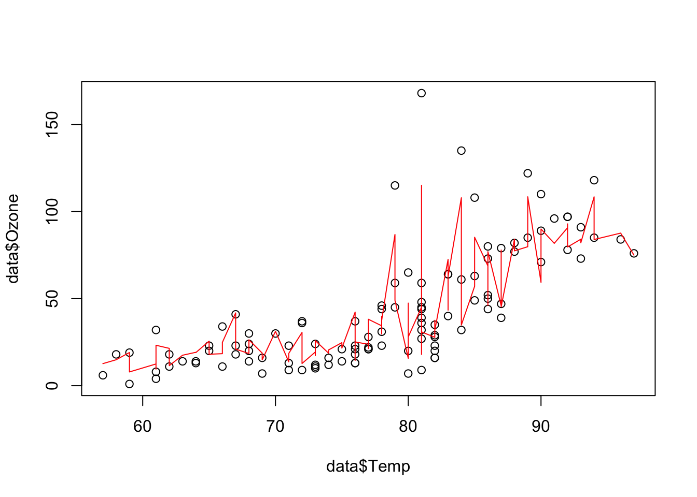
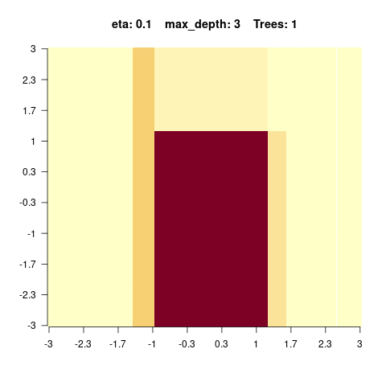

library(rpart)
library(rpart.plot)
data = airquality[complete.cases(airquality),]7 Tree-based Algorithms
7.1 Classification and Regression Trees
Tree-based models in general use a series of if-then rules to generate predictions from one or more decision trees. In this lecture, we will explore regression and classification trees by the example of the airquality data set. There is one important hyperparameter for regression trees: “minsplit”.
- It controls the depth of tree (see the help of rpart for a description).
- It controls the complexity of the tree and can thus also be seen as a regularization parameter.
We first prepare and visualize the data and afterwards fit a decision tree.
Fit and visualize one(!) regression tree:
rt = rpart(Ozone~., data = data, control = rpart.control(minsplit = 10))
rpart.plot(rt)
Visualize the predictions:
pred = predict(rt, data)
plot(data$Temp, data$Ozone)
lines(data$Temp[order(data$Temp)], pred[order(data$Temp)], col = "red")
The angular form of the prediction line is typical for regression trees and is a weakness of it.
7.2 Random Forest
To overcome this weakness, a random forest uses an ensemble of regression/classification trees. Thus, the random forest is in principle nothing else than a normal regression/classification tree, but it uses the idea of the “wisdom of the crowd” : By asking many people (regression/classification trees) one can make a more informed decision (prediction/classification). When you want to buy a new phone for example you also wouldn’t go directly into the shop, but search in the internet and ask your friends and family.
There are two randomization steps with the random forest that are responsible for their success:
- Bootstrap samples for each tree (we will sample observations with replacement from the data set. For the phone this is like not everyone has experience about each phone).
- At each split, we will sample a subset of predictors that is then considered as potential splitting criterion (for the phone this is like that not everyone has the same decision criteria). Annotation: While building a decision tree (random forests consist of many decision trees), one splits the data at some point according to their features. For example if you have females and males, big and small people in a crowd, you con split this crowd by gender and then by size or by size and then by gender to build a decision tree.
Applying the random forest follows the same principle as for the methods before: We visualize the data (we have already done this so often for the airquality data set, thus we skip it here), fit the algorithm and then plot the outcomes.
Fit a random forest and visualize the predictions:
library(randomForest)
set.seed(123)
data = airquality[complete.cases(airquality),]
rf = randomForest(Ozone~., data = data)
pred = predict(rf, data)
plot(Ozone~Temp, data = data)
lines(data$Temp[order(data$Temp)], pred[order(data$Temp)], col = "red")
One advantage of random forests is that we will get an importance of variables. At each split in each tree, the improvement in the split-criterion is the importance measure attributed to the splitting variable, and is accumulated over all the trees in the forest separately for each variable. Thus the variable importance shows us how important a variable is averaged over all trees.
rf$importance IncNodePurity
Solar.R 17969.59
Wind 31978.36
Temp 34176.71
Month 10753.73
Day 15436.47There are several important hyperparameters in a random forest that we can tune to get better results:
| Hyperparameter | Explanation |
|---|---|
| mtry | Subset of features randomly selected in each node (from which the algorithm can select the feature that will be used to split the data). |
| minimum node size | Minimal number of observations allowed in a node (before the branching is canceled) |
| max depth | Maximum number of tree depth |
7.3 Boosted Regression Trees
Random forests fit hundreds of trees independent of each other. Here, the idea of a boosted regression tree comes in. Maybe we could learn from the errors the previous weak learners made and thus enhance the performance of the algorithm.
A boosted regression tree (BRT) starts with a simple regression tree (weak learner) and then sequentially fits additional trees to improve the results. There are two different strategies to do so:
- AdaBoost: Wrong classified observations (by the previous tree) will get a higher weight and therefore the next trees will focus on difficult/missclassified observations.
- Gradient boosting (state of the art): Each sequential model will be fit on the residual errors of the previous model (strongly simplified, the actual algorithm is very complex).
We can fit a boosted regression tree using xgboost, but before we have to transform the data into a xgb.Dmatrix (which is a xgboost specific data type, the package sadly doesn’t support R matrices or data.frames).
library(xgboost)
set.seed(123)
data = airquality[complete.cases(airquality),]data_xg = xgb.DMatrix(data = as.matrix(scale(data[,-1])), label = data$Ozone)
brt = xgboost(data_xg, nrounds = 16L)[1] train-rmse:39.724624
[2] train-rmse:30.225761
[3] train-rmse:23.134840
[4] train-rmse:17.899179
[5] train-rmse:14.097785
[6] train-rmse:11.375457
[7] train-rmse:9.391276
[8] train-rmse:7.889690
[9] train-rmse:6.646586
[10] train-rmse:5.804859
[11] train-rmse:5.128437
[12] train-rmse:4.456416
[13] train-rmse:4.069464
[14] train-rmse:3.674615
[15] train-rmse:3.424578
[16] train-rmse:3.191301 The parameter “nrounds” controls how many sequential trees we fit, in our example this was 16. When we predict on new data, we can limit the number of trees used to prevent overfitting (remember: each new tree tries to improve the predictions of the previous trees).
Let us visualize the predictions for different numbers of trees:
oldpar = par(mfrow = c(2, 2))
for(i in 1:4){
pred = predict(brt, newdata = data_xg, ntreelimit = i)
plot(data$Temp, data$Ozone, main = i)
lines(data$Temp[order(data$Temp)], pred[order(data$Temp)], col = "red")
}[15:33:18] WARNING: src/c_api/c_api.cc:935: `ntree_limit` is deprecated, use `iteration_range` instead.[15:33:18] WARNING: src/c_api/c_api.cc:935: `ntree_limit` is deprecated, use `iteration_range` instead.[15:33:18] WARNING: src/c_api/c_api.cc:935: `ntree_limit` is deprecated, use `iteration_range` instead.[15:33:18] WARNING: src/c_api/c_api.cc:935: `ntree_limit` is deprecated, use `iteration_range` instead.
par(oldpar)There are also other ways to control for complexity of the boosted regression tree algorithm:
- max_depth: Maximum depth of each tree.
- shrinkage (each tree will get a weight and the weight will decrease with the number of trees).
When having specified the final model, we can obtain the importance of the variables like for random forests:
xgboost::xgb.importance(model = brt) Feature Gain Cover Frequency
<char> <num> <num> <num>
1: Temp 0.570072012 0.2958229 0.24836601
2: Wind 0.348230653 0.3419576 0.24183007
3: Solar.R 0.058795502 0.1571072 0.30718954
4: Day 0.019529985 0.1779925 0.16993464
5: Month 0.003371847 0.0271197 0.03267974sqrt(mean((data$Ozone - pred)^2)) # RMSE[1] 17.89918data_xg = xgb.DMatrix(data = as.matrix(scale(data[,-1])), label = data$Ozone)One important strength of xgboost is that we can directly do a cross-validation (which is independent of the boosted regression tree itself!) and specify its properties with the parameter “n-fold”:
set.seed(123)
brt = xgboost(data_xg, nrounds = 5L)[1] train-rmse:39.724624
[2] train-rmse:30.225761
[3] train-rmse:23.134840
[4] train-rmse:17.899179
[5] train-rmse:14.097785 brt_cv = xgboost::xgb.cv(data = data_xg, nfold = 3L,
nrounds = 3L, nthreads = 4L)[1] train-rmse:39.895106+2.127355 test-rmse:40.685477+5.745327
[2] train-rmse:30.367660+1.728788 test-rmse:32.255812+5.572963
[3] train-rmse:23.446237+1.366757 test-rmse:27.282435+5.746244 print(brt_cv)##### xgb.cv 3-folds
iter train_rmse_mean train_rmse_std test_rmse_mean test_rmse_std
<num> <num> <num> <num> <num>
1 39.89511 2.127355 40.68548 5.745327
2 30.36766 1.728788 32.25581 5.572963
3 23.44624 1.366757 27.28244 5.746244Annotation: The original data set is randomly partitioned into \(n\) equal sized subsamples. Each time, the model is trained on \(n - 1\) subsets (training set) and tested on the left out set (test set) to judge the performance.
If we do three-folded cross-validation, we actually fit three different boosted regression tree models (xgboost models) on \(\approx 67\%\) of the data points. Afterwards, we judge the performance on the respective holdout. This now tells us how well the model performed.
Important hyperparameters:
| Hyperparameter | Explanation |
|---|---|
| eta | learning rate (weighting of the sequential trees) |
| max depth | maximal depth in the trees (small = low complexity, large = high complexity) |
| subsample | subsample ratio of the data (bootstrap ratio) |
| lambda | regularization strength of the individual trees |
| max tree | maximal number of trees in the ensemble |
7.4 Exercise - Trees
Question: Regression Trees
We will use the following code snippet to understand the hyperparameter mincut and thus the predictive performance.
library(tree)
set.seed(123)
data = airquality
rt = tree(Ozone~., data = data,
control = tree.control(mincut = 1L, nobs = nrow(data)))
plot(rt)
text(rt)
pred = predict(rt, data)
plot(data$Temp, data$Ozone)
lines(data$Temp[order(data$Temp)], pred[order(data$Temp)], col = "red")
sqrt(mean((data$Ozone - pred)^2)) # RMSETry different mincut parameters and see what happens. (Compare the root mean squared error for different mincut parameters and explain what you see. Compare predictions for different mincut parameters and explain what happens.) What was wrong in the snippet above?
library(tree)
set.seed(123)
data = airquality[complete.cases(airquality),]
doTask = function(mincut){
rt = tree(Ozone~., data = data,
control = tree.control(mincut = mincut, nobs = nrow(data)))
pred = predict(rt, data)
plot(data$Temp, data$Ozone,
main = paste0(
"mincut: ", mincut,
"\nRMSE: ", round(sqrt(mean((data$Ozone - pred)^2)), 2)
)
)
lines(data$Temp[order(data$Temp)], pred[order(data$Temp)], col = "red")
}
for(i in c(1, 2, 3, 5, 10, 15, 25, 50, 54, 55, 56, 57, 75, 100)){ doTask(i) }


Approximately at mincut = 15, prediction is the best (mind overfitting). After mincut = 56, the prediction has no information at all and the RMSE stays constant.
Mind the complete cases of the airquality data set, that was the error.
Question: Random forest
We will use the following code snippet to explore a random forest:
library(randomForest)
set.seed(123)
data = airquality[complete.cases(airquality),]
rf = randomForest(Ozone~., data = data)
pred = predict(rf, data)
importance(rf) IncNodePurity
Solar.R 17969.59
Wind 31978.36
Temp 34176.71
Month 10753.73
Day 15436.47cat("RMSE: ", sqrt(mean((data$Ozone - pred)^2)), "\n")RMSE: 9.507848 plot(data$Temp, data$Ozone)
lines(data$Temp[order(data$Temp)], pred[order(data$Temp)], col = "red")
Try different values for the nodesize describe how the predictions depend on this parameter.
library(randomForest)
set.seed(123)
data = airquality[complete.cases(airquality),]
for(nodesize in c(1, 15, 50, 100)){
for(mtry in c(1, 3, 5)){
rf = randomForest(Ozone~., data = data, nodesize = nodesize)
pred = predict(rf, data)
plot(data$Temp, data$Ozone, main = paste0(
" nodesize: ", nodesize,
"\nRMSE: ", round(sqrt(mean((data$Ozone - pred)^2)), 2)
)
)
lines(data$Temp[order(data$Temp)], pred[order(data$Temp)], col = "red")
}
}


Nodesize affects the complexity. In other words: The bigger the nodesize, the smaller the trees and the more bias/less variance.
Question: Boosted regression trees
library(xgboost)
library(animation)
set.seed(123)
x1 = seq(-3, 3, length.out = 100)
x2 = seq(-3, 3, length.out = 100)
x = expand.grid(x1, x2)
y = apply(x, 1, function(t) exp(-t[1]^2 - t[2]^2))
image(matrix(y, 100, 100), main = "Original image", axes = FALSE, las = 2)
axis(1, at = seq(0, 1, length.out = 10),
labels = round(seq(-3, 3, length.out = 10), 1))
axis(2, at = seq(0, 1, length.out = 10),
labels = round(seq(-3, 3, length.out = 10), 1), las = 2)
model = xgboost::xgboost(xgb.DMatrix(data = as.matrix(x), label = y),
nrounds = 500L, verbose = 0L)
pred = predict(model, newdata = xgb.DMatrix(data = as.matrix(x)),
ntreelimit = 10L)
saveGIF(
{
for(i in c(1, 2, 4, 8, 12, 20, 40, 80, 200)){
pred = predict(model, newdata = xgb.DMatrix(data = as.matrix(x)),
ntreelimit = i)
image(matrix(pred, 100, 100), main = paste0("Trees: ", i),
axes = FALSE, las = 2)
axis(1, at = seq(0, 1, length.out = 10),
labels = round(seq(-3, 3, length.out = 10), 1))
axis(2, at = seq(0, 1, length.out = 10),
labels = round(seq(-3, 3, length.out = 10), 1), las = 2)
}
},
movie.name = "boosting.gif", autobrowse = FALSE
)
Run the code above and play with different values for max_depth and describe what you see!
Tip: have a look at the boosting.gif.
library(xgboost)
library(animation)
set.seed(123)
x1 = seq(-3, 3, length.out = 100)
x2 = seq(-3, 3, length.out = 100)
x = expand.grid(x1, x2)
y = apply(x, 1, function(t) exp(-t[1]^2 - t[2]^2))
image(matrix(y, 100, 100), main = "Original image", axes = FALSE, las = 2)
axis(1, at = seq(0, 1, length.out = 10),
labels = round(seq(-3, 3, length.out = 10), 1))
axis(2, at = seq(0, 1, length.out = 10),
labels = round(seq(-3, 3, length.out = 10), 1), las = 2)
for(max_depth in c(3, 6, 10, 20)){
model = xgboost::xgboost(xgb.DMatrix(data = as.matrix(x), label = y),
max_depth = max_depth,
nrounds = 500, verbose = 0L)
saveGIF(
{
for(i in c(1, 2, 4, 8, 12, 20, 40, 80, 200)){
pred = predict(model, newdata = xgb.DMatrix(data = as.matrix(x)),
ntreelimit = i)
image(matrix(pred, 100, 100),
main = paste0("eta: ", eta,
" max_depth: ", max_depth,
" Trees: ", i),
axes = FALSE, las = 2)
axis(1, at = seq(0, 1, length.out = 10),
labels = round(seq(-3, 3, length.out = 10), 1))
axis(2, at = seq(0, 1, length.out = 10),
labels = round(seq(-3, 3, length.out = 10), 1), las = 2)
}
},
movie.name = paste0("boosting_", max_depth, "_", eta, ".gif"),
autobrowse = FALSE
)
}We see that for high values of max_depth, the predictions “smooth out” faster. On the other hand, with a low max_depth (low complexity of the individual trees), more trees are required in the ensemble to achieve a smooth prediction surface.
?xgboost::xgboostJust some examples:
- 


Question: Hyperparameter tuning of random forest
| Hyperparameter | Explanation |
|---|---|
| mtry | Subset of features randomly selected in each node (from which the algorithm can select the feature that will be used to split the data). |
| minimum node size | Minimal number of observations allowed in a node (before the branching is canceled) |
| max depth | Maximum number of tree depth |
Combing back to the titanic dataset from the morning, we want to optimize min node size in our RF using a simple CV.
Prepare the data:
library(EcoData)
library(dplyr)
Attaching package: 'dplyr'The following object is masked from 'package:xgboost':
sliceThe following object is masked from 'package:randomForest':
combineThe following objects are masked from 'package:stats':
filter, lagThe following objects are masked from 'package:base':
intersect, setdiff, setequal, unionlibrary(missRanger)
data(titanic_ml)
data = titanic_ml
data =
data %>% select(survived, sex, age, fare, pclass)
data[,-1] = missRanger(data[,-1], verbose = 0)
data_sub =
data %>%
mutate(age = scales::rescale(age, c(0, 1)),
fare = scales::rescale(fare, c(0, 1))) %>%
mutate(sex = as.integer(sex) - 1L,
pclass = as.integer(pclass - 1L))
data_new = data_sub[is.na(data_sub$survived),] # for which we want to make predictions at the end
data_obs = data_sub[!is.na(data_sub$survived),] # data with known response
data_sub$survived = as.factor(data_sub$survived)
data_obs$survived = as.factor(data_obs$survived)Hints:
- adjust the ‘
type’ argument in thepredict(…)method (the default is to predict classes) - when predicting probabilities, the randomForest will return a matrix, a column for each class, we are interested in the probability of surviving (so the second column)
Bonus:
- tune min node size (and mtry)
- use more features
library(ranger)
Attaching package: 'ranger'The following object is masked from 'package:randomForest':
importancedata_obs = data_sub[!is.na(data_sub$survived),]
set.seed(42)
cv = 3
hyper_minnodesize = sample(300, 20)
tuning_results =
sapply(1:length(hyper_minnodesize), function(k) {
auc_inner = NULL
for(j in 1:cv) {
inner_split = as.integer(cut(1:nrow(data_obs), breaks = cv))
train_inner = data_obs[inner_split != j, ]
test_inner = data_obs[inner_split == j, ]
model = ranger(survived~.,data = train_inner, min.node.size = hyper_minnodesize[k], probability = TRUE)
predictions = predict(model, test_inner)$predictions[,2]
auc_inner[j]= Metrics::auc(test_inner$survived, predictions)
}
return(mean(auc_inner))
})
results = data.frame(minnodesize = hyper_minnodesize, AUC = tuning_results)
print(results) minnodesize AUC
1 49 0.8269769
2 153 0.8186182
3 74 0.8191470
4 228 0.8139092
5 146 0.8176753
6 122 0.8190757
7 300 0.8080344
8 128 0.8202545
9 24 0.8296999
10 89 0.8206236
11 165 0.8170405
12 110 0.8198368
13 20 0.8302728
14 291 0.8090011
15 283 0.8105243
16 109 0.8209075
17 5 0.8282860
18 212 0.8122884
19 259 0.8125252
20 292 0.8081344Make predictions:
model = ranger(survived~.,data = data_obs, min.node.size = results[which.max(results$AUC),1], probability = TRUE)
write.csv(data.frame(y = predict(model, data_new)$predictions[,1]), file = "Max_titanic_rf.csv")
Question: Hyperparameter tuning of boosted regression trees
Important hyperparameters:
| Hyperparameter | Explanation |
|---|---|
| eta | learning rate (weighting of the sequential trees) |
| max depth | maximal depth in the trees (small = low complexity, large = high complexity) |
| subsample | subsample ratio of the data (bootstrap ratio) |
| lambda | regularization strength of the individual trees |
| max tree | maximal number of trees in the ensemble |
Combing back to the titanic dataset from the morning, we want to optimize max depth and the eta parameter in xgboost.
Prepare the data:
library(EcoData)
library(dplyr)
library(missRanger)
data(titanic_ml)
data = titanic_ml
data =
data %>% select(survived, sex, age, fare, pclass)
data[,-1] = missRanger(data[,-1], verbose = 0)
data_sub =
data %>%
mutate(age = scales::rescale(age, c(0, 1)),
fare = scales::rescale(fare, c(0, 1))) %>%
mutate(sex = as.integer(sex) - 1L,
pclass = as.integer(pclass - 1L))
data_new = data_sub[is.na(data_sub$survived),] # for which we want to make predictions at the end
data_obs = data_sub[!is.na(data_sub$survived),] # data with known responselibrary(xgboost)
set.seed(42)
data_obs = data_sub[!is.na(data_sub$survived),]
cv = 3
outer_split = as.integer(cut(1:nrow(data_obs), breaks = cv))
# sample minnodesize values (must be integers)
hyper_depth = sample(200, 20)
hyper_eta = runif(20, 0, 1)
tuning_results =
sapply(1:length(hyper_minnodesize), function(k) {
auc_inner = NULL
for(j in 1:cv) {
inner_split = as.integer(cut(1:nrow(data_obs), breaks = cv))
train_inner = data_obs[inner_split != j, ]
test_inner = data_obs[inner_split == j, ]
data_xg = xgb.DMatrix(data = as.matrix(train_inner[,-1]), label = train_inner$survived)
model = xgboost(data_xg, nrounds = 16L, eta = hyper_eta[k], max_depth = hyper_depth[k])
predictions = predict(model, newdata = as.matrix(test_inner)[,-1])
auc_inner[j]= Metrics::auc(test_inner$survived, predictions)
}
return(mean(auc_inner))
})[1] train-rmse:0.179874
[2] train-rmse:0.111511
[3] train-rmse:0.093345
[4] train-rmse:0.088640
[5] train-rmse:0.087423
[6] train-rmse:0.087114
[7] train-rmse:0.087028
[8] train-rmse:0.087008
[9] train-rmse:0.087003
[10] train-rmse:0.087002
[11] train-rmse:0.087002
[12] train-rmse:0.087002
[13] train-rmse:0.087002
[14] train-rmse:0.087002
[15] train-rmse:0.087002
[16] train-rmse:0.087002
[1] train-rmse:0.197605
[2] train-rmse:0.127881
[3] train-rmse:0.111491
[4] train-rmse:0.107606
[5] train-rmse:0.106642
[6] train-rmse:0.106404
[7] train-rmse:0.106343
[8] train-rmse:0.106328
[9] train-rmse:0.106324
[10] train-rmse:0.106323
[11] train-rmse:0.106323
[12] train-rmse:0.106323
[13] train-rmse:0.106323
[14] train-rmse:0.106323
[15] train-rmse:0.106323
[16] train-rmse:0.106323
[1] train-rmse:0.177381
[2] train-rmse:0.114268
[3] train-rmse:0.097132
[4] train-rmse:0.092418
[5] train-rmse:0.091262
[6] train-rmse:0.090967
[7] train-rmse:0.090894
[8] train-rmse:0.090875
[9] train-rmse:0.090872
[10] train-rmse:0.090871
[11] train-rmse:0.090871
[12] train-rmse:0.090871
[13] train-rmse:0.090871
[14] train-rmse:0.090871
[15] train-rmse:0.090871
[16] train-rmse:0.090871
[1] train-rmse:0.186140
[2] train-rmse:0.114098
[3] train-rmse:0.094564
[4] train-rmse:0.089031
[5] train-rmse:0.087557
[6] train-rmse:0.087152
[7] train-rmse:0.087042
[8] train-rmse:0.087012
[9] train-rmse:0.087005
[10] train-rmse:0.087003
[11] train-rmse:0.087003
[12] train-rmse:0.087003
[13] train-rmse:0.087003
[14] train-rmse:0.087003
[15] train-rmse:0.087003
[16] train-rmse:0.087003
[1] train-rmse:0.203653
[2] train-rmse:0.134873
[3] train-rmse:0.113641
[4] train-rmse:0.108327
[5] train-rmse:0.106851
[6] train-rmse:0.106469
[7] train-rmse:0.106362
[8] train-rmse:0.106333
[9] train-rmse:0.106325
[10] train-rmse:0.106323
[11] train-rmse:0.106323
[12] train-rmse:0.106323
[13] train-rmse:0.106323
[14] train-rmse:0.106323
[15] train-rmse:0.106323
[16] train-rmse:0.106323
[1] train-rmse:0.184197
[2] train-rmse:0.117938
[3] train-rmse:0.098806
[4] train-rmse:0.093020
[5] train-rmse:0.091468
[6] train-rmse:0.091033
[7] train-rmse:0.090913
[8] train-rmse:0.090881
[9] train-rmse:0.090874
[10] train-rmse:0.090872
[11] train-rmse:0.090872
[12] train-rmse:0.090872
[13] train-rmse:0.090872
[14] train-rmse:0.090872
[15] train-rmse:0.090872
[16] train-rmse:0.090872
[1] train-rmse:0.467729
[2] train-rmse:0.437615
[3] train-rmse:0.409922
[4] train-rmse:0.384800
[5] train-rmse:0.360897
[6] train-rmse:0.338433
[7] train-rmse:0.317906
[8] train-rmse:0.298215
[9] train-rmse:0.280254
[10] train-rmse:0.264027
[11] train-rmse:0.248838
[12] train-rmse:0.234521
[13] train-rmse:0.221550
[14] train-rmse:0.209482
[15] train-rmse:0.198952
[16] train-rmse:0.188723
[1] train-rmse:0.469162
[2] train-rmse:0.439984
[3] train-rmse:0.412966
[4] train-rmse:0.387596
[5] train-rmse:0.364004
[6] train-rmse:0.342254
[7] train-rmse:0.322150
[8] train-rmse:0.303419
[9] train-rmse:0.286478
[10] train-rmse:0.270574
[11] train-rmse:0.256408
[12] train-rmse:0.243034
[13] train-rmse:0.230632
[14] train-rmse:0.219210
[15] train-rmse:0.208778
[16] train-rmse:0.199186
[1] train-rmse:0.467916
[2] train-rmse:0.438880
[3] train-rmse:0.411728
[4] train-rmse:0.386746
[5] train-rmse:0.363667
[6] train-rmse:0.341896
[7] train-rmse:0.321571
[8] train-rmse:0.303275
[9] train-rmse:0.285446
[10] train-rmse:0.269235
[11] train-rmse:0.253895
[12] train-rmse:0.239985
[13] train-rmse:0.226963
[14] train-rmse:0.215091
[15] train-rmse:0.204276
[16] train-rmse:0.194171
[1] train-rmse:0.306732
[2] train-rmse:0.197584
[3] train-rmse:0.141514
[4] train-rmse:0.114190
[5] train-rmse:0.100733
[6] train-rmse:0.094156
[7] train-rmse:0.090719
[8] train-rmse:0.088965
[9] train-rmse:0.088037
[10] train-rmse:0.087571
[11] train-rmse:0.087307
[12] train-rmse:0.087166
[13] train-rmse:0.087091
[14] train-rmse:0.087050
[15] train-rmse:0.087027
[16] train-rmse:0.087015
[1] train-rmse:0.316426
[2] train-rmse:0.212646
[3] train-rmse:0.159442
[4] train-rmse:0.132158
[5] train-rmse:0.119495
[6] train-rmse:0.113040
[7] train-rmse:0.109813
[8] train-rmse:0.108169
[9] train-rmse:0.107309
[10] train-rmse:0.106851
[11] train-rmse:0.106606
[12] train-rmse:0.106477
[13] train-rmse:0.106406
[14] train-rmse:0.106367
[15] train-rmse:0.106346
[16] train-rmse:0.106335
[1] train-rmse:0.307302
[2] train-rmse:0.202465
[3] train-rmse:0.147832
[4] train-rmse:0.119587
[5] train-rmse:0.105759
[6] train-rmse:0.098713
[7] train-rmse:0.095032
[8] train-rmse:0.093150
[9] train-rmse:0.092104
[10] train-rmse:0.091540
[11] train-rmse:0.091235
[12] train-rmse:0.091074
[13] train-rmse:0.090981
[14] train-rmse:0.090930
[15] train-rmse:0.090902
[16] train-rmse:0.090887
[1] train-rmse:0.351015
[2] train-rmse:0.252167
[3] train-rmse:0.186257
[4] train-rmse:0.146757
[5] train-rmse:0.122451
[6] train-rmse:0.108297
[7] train-rmse:0.099927
[8] train-rmse:0.094947
[9] train-rmse:0.091985
[10] train-rmse:0.090114
[11] train-rmse:0.088953
[12] train-rmse:0.088226
[13] train-rmse:0.087783
[14] train-rmse:0.087496
[15] train-rmse:0.087317
[16] train-rmse:0.087204
[1] train-rmse:0.358195
[2] train-rmse:0.260765
[3] train-rmse:0.201220
[4] train-rmse:0.162572
[5] train-rmse:0.139558
[6] train-rmse:0.126062
[7] train-rmse:0.118349
[8] train-rmse:0.113667
[9] train-rmse:0.110882
[10] train-rmse:0.109190
[11] train-rmse:0.108103
[12] train-rmse:0.107432
[13] train-rmse:0.107025
[14] train-rmse:0.106768
[15] train-rmse:0.106603
[16] train-rmse:0.106501
[1] train-rmse:0.351623
[2] train-rmse:0.254639
[3] train-rmse:0.191452
[4] train-rmse:0.151625
[5] train-rmse:0.127169
[6] train-rmse:0.113025
[7] train-rmse:0.104328
[8] train-rmse:0.099150
[9] train-rmse:0.096040
[10] train-rmse:0.094130
[11] train-rmse:0.092931
[12] train-rmse:0.092173
[13] train-rmse:0.091699
[14] train-rmse:0.091398
[15] train-rmse:0.091207
[16] train-rmse:0.091087
[1] train-rmse:0.193564
[2] train-rmse:0.116438
[3] train-rmse:0.095766
[4] train-rmse:0.089590
[5] train-rmse:0.087776
[6] train-rmse:0.087231
[7] train-rmse:0.087070
[8] train-rmse:0.087022
[9] train-rmse:0.087007
[10] train-rmse:0.087003
[11] train-rmse:0.087003
[12] train-rmse:0.087003
[13] train-rmse:0.087003
[14] train-rmse:0.087003
[15] train-rmse:0.087003
[16] train-rmse:0.087003
[1] train-rmse:0.210684
[2] train-rmse:0.136753
[3] train-rmse:0.114866
[4] train-rmse:0.108728
[5] train-rmse:0.107031
[6] train-rmse:0.106529
[7] train-rmse:0.106384
[8] train-rmse:0.106340
[9] train-rmse:0.106327
[10] train-rmse:0.106324
[11] train-rmse:0.106324
[12] train-rmse:0.106324
[13] train-rmse:0.106324
[14] train-rmse:0.106324
[15] train-rmse:0.106324
[16] train-rmse:0.106324
[1] train-rmse:0.192100
[2] train-rmse:0.121765
[3] train-rmse:0.100305
[4] train-rmse:0.093577
[5] train-rmse:0.091657
[6] train-rmse:0.091102
[7] train-rmse:0.090937
[8] train-rmse:0.090889
[9] train-rmse:0.090875
[10] train-rmse:0.090872
[11] train-rmse:0.090871
[12] train-rmse:0.090871
[13] train-rmse:0.090871
[14] train-rmse:0.090871
[15] train-rmse:0.090871
[16] train-rmse:0.090871
[1] train-rmse:0.330469
[2] train-rmse:0.230227
[3] train-rmse:0.165742
[4] train-rmse:0.130524
[5] train-rmse:0.111136
[6] train-rmse:0.100685
[7] train-rmse:0.094826
[8] train-rmse:0.091561
[9] train-rmse:0.089642
[10] train-rmse:0.088556
[11] train-rmse:0.087917
[12] train-rmse:0.087544
[13] train-rmse:0.087327
[14] train-rmse:0.087192
[15] train-rmse:0.087115
[16] train-rmse:0.087069
[1] train-rmse:0.338786
[2] train-rmse:0.237202
[3] train-rmse:0.177989
[4] train-rmse:0.145894
[5] train-rmse:0.127648
[6] train-rmse:0.118145
[7] train-rmse:0.113166
[8] train-rmse:0.110322
[9] train-rmse:0.108614
[10] train-rmse:0.107659
[11] train-rmse:0.107110
[12] train-rmse:0.106782
[13] train-rmse:0.106592
[14] train-rmse:0.106482
[15] train-rmse:0.106417
[16] train-rmse:0.106378
[1] train-rmse:0.331081
[2] train-rmse:0.234663
[3] train-rmse:0.172205
[4] train-rmse:0.136670
[5] train-rmse:0.116758
[6] train-rmse:0.105696
[7] train-rmse:0.099554
[8] train-rmse:0.095938
[9] train-rmse:0.093846
[10] train-rmse:0.092645
[11] train-rmse:0.091928
[12] train-rmse:0.091503
[13] train-rmse:0.091248
[14] train-rmse:0.091096
[15] train-rmse:0.091005
[16] train-rmse:0.090951
[1] train-rmse:0.208858
[2] train-rmse:0.123660
[3] train-rmse:0.098584
[4] train-rmse:0.090828
[5] train-rmse:0.088301
[6] train-rmse:0.087434
[7] train-rmse:0.087148
[8] train-rmse:0.087051
[9] train-rmse:0.087018
[10] train-rmse:0.087007
[11] train-rmse:0.087005
[12] train-rmse:0.087004
[13] train-rmse:0.087004
[14] train-rmse:0.087004
[15] train-rmse:0.087004
[16] train-rmse:0.087004
[1] train-rmse:0.224991
[2] train-rmse:0.143104
[3] train-rmse:0.117787
[4] train-rmse:0.109923
[5] train-rmse:0.107489
[6] train-rmse:0.106702
[7] train-rmse:0.106447
[8] train-rmse:0.106363
[9] train-rmse:0.106336
[10] train-rmse:0.106327
[11] train-rmse:0.106325
[12] train-rmse:0.106323
[13] train-rmse:0.106323
[14] train-rmse:0.106323
[15] train-rmse:0.106323
[16] train-rmse:0.106323
[1] train-rmse:0.208073
[2] train-rmse:0.127989
[3] train-rmse:0.103306
[4] train-rmse:0.095162
[5] train-rmse:0.092360
[6] train-rmse:0.091372
[7] train-rmse:0.091036
[8] train-rmse:0.090925
[9] train-rmse:0.090888
[10] train-rmse:0.090876
[11] train-rmse:0.090873
[12] train-rmse:0.090873
[13] train-rmse:0.090873
[14] train-rmse:0.090873
[15] train-rmse:0.090873
[16] train-rmse:0.090873
[1] train-rmse:0.234956
[2] train-rmse:0.135984
[3] train-rmse:0.105247
[4] train-rmse:0.093754
[5] train-rmse:0.089597
[6] train-rmse:0.088029
[7] train-rmse:0.087402
[8] train-rmse:0.087159
[9] train-rmse:0.087062
[10] train-rmse:0.087025
[11] train-rmse:0.087010
[12] train-rmse:0.087004
[13] train-rmse:0.087003
[14] train-rmse:0.087003
[15] train-rmse:0.087003
[16] train-rmse:0.087003
[1] train-rmse:0.249281
[2] train-rmse:0.154890
[3] train-rmse:0.123886
[4] train-rmse:0.112802
[5] train-rmse:0.108784
[6] train-rmse:0.107254
[7] train-rmse:0.106677
[8] train-rmse:0.106464
[9] train-rmse:0.106378
[10] train-rmse:0.106344
[11] train-rmse:0.106331
[12] train-rmse:0.106327
[13] train-rmse:0.106325
[14] train-rmse:0.106325
[15] train-rmse:0.106325
[16] train-rmse:0.106325
[1] train-rmse:0.234856
[2] train-rmse:0.150792
[3] train-rmse:0.114122
[4] train-rmse:0.099989
[5] train-rmse:0.094492
[6] train-rmse:0.092311
[7] train-rmse:0.091423
[8] train-rmse:0.091092
[9] train-rmse:0.090956
[10] train-rmse:0.090903
[11] train-rmse:0.090882
[12] train-rmse:0.090875
[13] train-rmse:0.090873
[14] train-rmse:0.090872
[15] train-rmse:0.090872
[16] train-rmse:0.090872
[1] train-rmse:0.215028
[2] train-rmse:0.126956
[3] train-rmse:0.100580
[4] train-rmse:0.091678
[5] train-rmse:0.088563
[6] train-rmse:0.087548
[7] train-rmse:0.087210
[8] train-rmse:0.087074
[9] train-rmse:0.087026
[10] train-rmse:0.087010
[11] train-rmse:0.087005
[12] train-rmse:0.087003
[13] train-rmse:0.087003
[14] train-rmse:0.087003
[15] train-rmse:0.087003
[16] train-rmse:0.087003
[1] train-rmse:0.230737
[2] train-rmse:0.145761
[3] train-rmse:0.119177
[4] train-rmse:0.110624
[5] train-rmse:0.107760
[6] train-rmse:0.106805
[7] train-rmse:0.106490
[8] train-rmse:0.106381
[9] train-rmse:0.106342
[10] train-rmse:0.106329
[11] train-rmse:0.106325
[12] train-rmse:0.106324
[13] train-rmse:0.106324
[14] train-rmse:0.106324
[15] train-rmse:0.106324
[16] train-rmse:0.106324
[1] train-rmse:0.214446
[2] train-rmse:0.132342
[3] train-rmse:0.105288
[4] train-rmse:0.095947
[5] train-rmse:0.092801
[6] train-rmse:0.091555
[7] train-rmse:0.091108
[8] train-rmse:0.090952
[9] train-rmse:0.090898
[10] train-rmse:0.090879
[11] train-rmse:0.090875
[12] train-rmse:0.090872
[13] train-rmse:0.090872
[14] train-rmse:0.090872
[15] train-rmse:0.090872
[16] train-rmse:0.090872
[1] train-rmse:0.351781
[2] train-rmse:0.253427
[3] train-rmse:0.188588
[4] train-rmse:0.147626
[5] train-rmse:0.123102
[6] train-rmse:0.108737
[7] train-rmse:0.100261
[8] train-rmse:0.095162
[9] train-rmse:0.092115
[10] train-rmse:0.090235
[11] train-rmse:0.089058
[12] train-rmse:0.088310
[13] train-rmse:0.087845
[14] train-rmse:0.087546
[15] train-rmse:0.087350
[16] train-rmse:0.087225
[1] train-rmse:0.358919
[2] train-rmse:0.261709
[3] train-rmse:0.202105
[4] train-rmse:0.163287
[5] train-rmse:0.140079
[6] train-rmse:0.126398
[7] train-rmse:0.118578
[8] train-rmse:0.113839
[9] train-rmse:0.110995
[10] train-rmse:0.109211
[11] train-rmse:0.108125
[12] train-rmse:0.107451
[13] train-rmse:0.107033
[14] train-rmse:0.106776
[15] train-rmse:0.106609
[16] train-rmse:0.106503
[1] train-rmse:0.352388
[2] train-rmse:0.255801
[3] train-rmse:0.192627
[4] train-rmse:0.152263
[5] train-rmse:0.127752
[6] train-rmse:0.113479
[7] train-rmse:0.104592
[8] train-rmse:0.099280
[9] train-rmse:0.096116
[10] train-rmse:0.094183
[11] train-rmse:0.092973
[12] train-rmse:0.092202
[13] train-rmse:0.091715
[14] train-rmse:0.091412
[15] train-rmse:0.091219
[16] train-rmse:0.091096
[1] train-rmse:0.250519
[2] train-rmse:0.147518
[3] train-rmse:0.110311
[4] train-rmse:0.096490
[5] train-rmse:0.090867
[6] train-rmse:0.088598
[7] train-rmse:0.087675
[8] train-rmse:0.087284
[9] train-rmse:0.087122
[10] train-rmse:0.087053
[11] train-rmse:0.087023
[12] train-rmse:0.087010
[13] train-rmse:0.087005
[14] train-rmse:0.087003
[15] train-rmse:0.087003
[16] train-rmse:0.087003
[1] train-rmse:0.263780
[2] train-rmse:0.164382
[3] train-rmse:0.128273
[4] train-rmse:0.115004
[5] train-rmse:0.109797
[6] train-rmse:0.107767
[7] train-rmse:0.106924
[8] train-rmse:0.106590
[9] train-rmse:0.106436
[10] train-rmse:0.106369
[11] train-rmse:0.106342
[12] train-rmse:0.106331
[13] train-rmse:0.106327
[14] train-rmse:0.106325
[15] train-rmse:0.106325
[16] train-rmse:0.106325
[1] train-rmse:0.250671
[2] train-rmse:0.154800
[3] train-rmse:0.117639
[4] train-rmse:0.102356
[5] train-rmse:0.095750
[6] train-rmse:0.092974
[7] train-rmse:0.091787
[8] train-rmse:0.091262
[9] train-rmse:0.091036
[10] train-rmse:0.090940
[11] train-rmse:0.090899
[12] train-rmse:0.090882
[13] train-rmse:0.090875
[14] train-rmse:0.090873
[15] train-rmse:0.090873
[16] train-rmse:0.090873
[1] train-rmse:0.498448
[2] train-rmse:0.496880
[3] train-rmse:0.495318
[4] train-rmse:0.493771
[5] train-rmse:0.492210
[6] train-rmse:0.490655
[7] train-rmse:0.489126
[8] train-rmse:0.487582
[9] train-rmse:0.486065
[10] train-rmse:0.484544
[11] train-rmse:0.483018
[12] train-rmse:0.481518
[13] train-rmse:0.480004
[14] train-rmse:0.478514
[15] train-rmse:0.477012
[16] train-rmse:0.475515
[1] train-rmse:0.498515
[2] train-rmse:0.497047
[3] train-rmse:0.495575
[4] train-rmse:0.494117
[5] train-rmse:0.492657
[6] train-rmse:0.491188
[7] train-rmse:0.489692
[8] train-rmse:0.488208
[9] train-rmse:0.486723
[10] train-rmse:0.485252
[11] train-rmse:0.483778
[12] train-rmse:0.482317
[13] train-rmse:0.480854
[14] train-rmse:0.479398
[15] train-rmse:0.477953
[16] train-rmse:0.476507
[1] train-rmse:0.498457
[2] train-rmse:0.496922
[3] train-rmse:0.495393
[4] train-rmse:0.493870
[5] train-rmse:0.492353
[6] train-rmse:0.490861
[7] train-rmse:0.489385
[8] train-rmse:0.487883
[9] train-rmse:0.486408
[10] train-rmse:0.484939
[11] train-rmse:0.483485
[12] train-rmse:0.482027
[13] train-rmse:0.480555
[14] train-rmse:0.479118
[15] train-rmse:0.477677
[16] train-rmse:0.476233
[1] train-rmse:0.209603
[2] train-rmse:0.123993
[3] train-rmse:0.098737
[4] train-rmse:0.090888
[5] train-rmse:0.088331
[6] train-rmse:0.087446
[7] train-rmse:0.087152
[8] train-rmse:0.087051
[9] train-rmse:0.087018
[10] train-rmse:0.087007
[11] train-rmse:0.087004
[12] train-rmse:0.087004
[13] train-rmse:0.087004
[14] train-rmse:0.087004
[15] train-rmse:0.087004
[16] train-rmse:0.087004
[1] train-rmse:0.225685
[2] train-rmse:0.143415
[3] train-rmse:0.117934
[4] train-rmse:0.109989
[5] train-rmse:0.107516
[6] train-rmse:0.106711
[7] train-rmse:0.106452
[8] train-rmse:0.106366
[9] train-rmse:0.106337
[10] train-rmse:0.106328
[11] train-rmse:0.106325
[12] train-rmse:0.106324
[13] train-rmse:0.106324
[14] train-rmse:0.106324
[15] train-rmse:0.106324
[16] train-rmse:0.106324
[1] train-rmse:0.208845
[2] train-rmse:0.128217
[3] train-rmse:0.103305
[4] train-rmse:0.095078
[5] train-rmse:0.092521
[6] train-rmse:0.091415
[7] train-rmse:0.091053
[8] train-rmse:0.090932
[9] train-rmse:0.090890
[10] train-rmse:0.090876
[11] train-rmse:0.090873
[12] train-rmse:0.090872
[13] train-rmse:0.090872
[14] train-rmse:0.090872
[15] train-rmse:0.090872
[16] train-rmse:0.090872
[1] train-rmse:0.497117
[2] train-rmse:0.494214
[3] train-rmse:0.491312
[4] train-rmse:0.488467
[5] train-rmse:0.485606
[6] train-rmse:0.482765
[7] train-rmse:0.479979
[8] train-rmse:0.477178
[9] train-rmse:0.474452
[10] train-rmse:0.471690
[11] train-rmse:0.468975
[12] train-rmse:0.466287
[13] train-rmse:0.463583
[14] train-rmse:0.460933
[15] train-rmse:0.458287
[16] train-rmse:0.455666
[1] train-rmse:0.497243
[2] train-rmse:0.494525
[3] train-rmse:0.491811
[4] train-rmse:0.489086
[5] train-rmse:0.486322
[6] train-rmse:0.483593
[7] train-rmse:0.480867
[8] train-rmse:0.478174
[9] train-rmse:0.475486
[10] train-rmse:0.472834
[11] train-rmse:0.470184
[12] train-rmse:0.467568
[13] train-rmse:0.464955
[14] train-rmse:0.462363
[15] train-rmse:0.459802
[16] train-rmse:0.457245
[1] train-rmse:0.497134
[2] train-rmse:0.494293
[3] train-rmse:0.491473
[4] train-rmse:0.488707
[5] train-rmse:0.485981
[6] train-rmse:0.483255
[7] train-rmse:0.480511
[8] train-rmse:0.477844
[9] train-rmse:0.475176
[10] train-rmse:0.472513
[11] train-rmse:0.469888
[12] train-rmse:0.467262
[13] train-rmse:0.464617
[14] train-rmse:0.462029
[15] train-rmse:0.459453
[16] train-rmse:0.456877
[1] train-rmse:0.419390
[2] train-rmse:0.353346
[3] train-rmse:0.298449
[4] train-rmse:0.254510
[5] train-rmse:0.217803
[6] train-rmse:0.190061
[7] train-rmse:0.166867
[8] train-rmse:0.148505
[9] train-rmse:0.134282
[10] train-rmse:0.123753
[11] train-rmse:0.115280
[12] train-rmse:0.108795
[13] train-rmse:0.103857
[14] train-rmse:0.100032
[15] train-rmse:0.097152
[16] train-rmse:0.094904
[1] train-rmse:0.423078
[2] train-rmse:0.357700
[3] train-rmse:0.304688
[4] train-rmse:0.262851
[5] train-rmse:0.229419
[6] train-rmse:0.201481
[7] train-rmse:0.179908
[8] train-rmse:0.162848
[9] train-rmse:0.149699
[10] train-rmse:0.139326
[11] train-rmse:0.131554
[12] train-rmse:0.125665
[13] train-rmse:0.121146
[14] train-rmse:0.117755
[15] train-rmse:0.115186
[16] train-rmse:0.113354
[1] train-rmse:0.419811
[2] train-rmse:0.356227
[3] train-rmse:0.303668
[4] train-rmse:0.259524
[5] train-rmse:0.223536
[6] train-rmse:0.195919
[7] train-rmse:0.172883
[8] train-rmse:0.154638
[9] train-rmse:0.140301
[10] train-rmse:0.129240
[11] train-rmse:0.120637
[12] train-rmse:0.114023
[13] train-rmse:0.108881
[14] train-rmse:0.104854
[15] train-rmse:0.101991
[16] train-rmse:0.099816
[1] train-rmse:0.193395
[2] train-rmse:0.116378
[3] train-rmse:0.095737
[4] train-rmse:0.089578
[5] train-rmse:0.087771
[6] train-rmse:0.087229
[7] train-rmse:0.087068
[8] train-rmse:0.087022
[9] train-rmse:0.087007
[10] train-rmse:0.087003
[11] train-rmse:0.087002
[12] train-rmse:0.087002
[13] train-rmse:0.087002
[14] train-rmse:0.087002
[15] train-rmse:0.087002
[16] train-rmse:0.087002
[1] train-rmse:0.210524
[2] train-rmse:0.136690
[3] train-rmse:0.114836
[4] train-rmse:0.108716
[5] train-rmse:0.107026
[6] train-rmse:0.106527
[7] train-rmse:0.106383
[8] train-rmse:0.106340
[9] train-rmse:0.106327
[10] train-rmse:0.106324
[11] train-rmse:0.106324
[12] train-rmse:0.106324
[13] train-rmse:0.106324
[14] train-rmse:0.106324
[15] train-rmse:0.106324
[16] train-rmse:0.106324
[1] train-rmse:0.191921
[2] train-rmse:0.121702
[3] train-rmse:0.100276
[4] train-rmse:0.093564
[5] train-rmse:0.091652
[6] train-rmse:0.091100
[7] train-rmse:0.090937
[8] train-rmse:0.090889
[9] train-rmse:0.090875
[10] train-rmse:0.090872
[11] train-rmse:0.090871
[12] train-rmse:0.090871
[13] train-rmse:0.090871
[14] train-rmse:0.090871
[15] train-rmse:0.090871
[16] train-rmse:0.090871
[1] train-rmse:0.273776
[2] train-rmse:0.165159
[3] train-rmse:0.120057
[4] train-rmse:0.101687
[5] train-rmse:0.093506
[6] train-rmse:0.089943
[7] train-rmse:0.088365
[8] train-rmse:0.087651
[9] train-rmse:0.087310
[10] train-rmse:0.087148
[11] train-rmse:0.087072
[12] train-rmse:0.087034
[13] train-rmse:0.087017
[14] train-rmse:0.087008
[15] train-rmse:0.087006
[16] train-rmse:0.087004
[1] train-rmse:0.285507
[2] train-rmse:0.182207
[3] train-rmse:0.138173
[4] train-rmse:0.120081
[5] train-rmse:0.112562
[6] train-rmse:0.109147
[7] train-rmse:0.107627
[8] train-rmse:0.106961
[9] train-rmse:0.106624
[10] train-rmse:0.106466
[11] train-rmse:0.106392
[12] train-rmse:0.106355
[13] train-rmse:0.106337
[14] train-rmse:0.106329
[15] train-rmse:0.106327
[16] train-rmse:0.106326
[1] train-rmse:0.274173
[2] train-rmse:0.170897
[3] train-rmse:0.126160
[4] train-rmse:0.106902
[5] train-rmse:0.098405
[6] train-rmse:0.094582
[7] train-rmse:0.092600
[8] train-rmse:0.091691
[9] train-rmse:0.091259
[10] train-rmse:0.091057
[11] train-rmse:0.090959
[12] train-rmse:0.090912
[13] train-rmse:0.090889
[14] train-rmse:0.090879
[15] train-rmse:0.090874
[16] train-rmse:0.090872
[1] train-rmse:0.354913
[2] train-rmse:0.259141
[3] train-rmse:0.193752
[4] train-rmse:0.151920
[5] train-rmse:0.126471
[6] train-rmse:0.111022
[7] train-rmse:0.101936
[8] train-rmse:0.096285
[9] train-rmse:0.092825
[10] train-rmse:0.090703
[11] train-rmse:0.089371
[12] train-rmse:0.088539
[13] train-rmse:0.087995
[14] train-rmse:0.087642
[15] train-rmse:0.087417
[16] train-rmse:0.087270
[1] train-rmse:0.361881
[2] train-rmse:0.265598
[3] train-rmse:0.205743
[4] train-rmse:0.166596
[5] train-rmse:0.142247
[6] train-rmse:0.127962
[7] train-rmse:0.119527
[8] train-rmse:0.114512
[9] train-rmse:0.111396
[10] train-rmse:0.109501
[11] train-rmse:0.108359
[12] train-rmse:0.107614
[13] train-rmse:0.107144
[14] train-rmse:0.106850
[15] train-rmse:0.106665
[16] train-rmse:0.106541
[1] train-rmse:0.355516
[2] train-rmse:0.259145
[3] train-rmse:0.195938
[4] train-rmse:0.155144
[5] train-rmse:0.130427
[6] train-rmse:0.114998
[7] train-rmse:0.105689
[8] train-rmse:0.100132
[9] train-rmse:0.096693
[10] train-rmse:0.094565
[11] train-rmse:0.093239
[12] train-rmse:0.092387
[13] train-rmse:0.091862
[14] train-rmse:0.091509
[15] train-rmse:0.091288
[16] train-rmse:0.091142
[1] train-rmse:0.334489
[2] train-rmse:0.234848
[3] train-rmse:0.169772
[4] train-rmse:0.132958
[5] train-rmse:0.112852
[6] train-rmse:0.101744
[7] train-rmse:0.095450
[8] train-rmse:0.091966
[9] train-rmse:0.089956
[10] train-rmse:0.088759
[11] train-rmse:0.088056
[12] train-rmse:0.087632
[13] train-rmse:0.087380
[14] train-rmse:0.087228
[15] train-rmse:0.087138
[16] train-rmse:0.087084
[1] train-rmse:0.342579
[2] train-rmse:0.241744
[3] train-rmse:0.181848
[4] train-rmse:0.148656
[5] train-rmse:0.129412
[6] train-rmse:0.119614
[7] train-rmse:0.114012
[8] train-rmse:0.110799
[9] train-rmse:0.108960
[10] train-rmse:0.107884
[11] train-rmse:0.107240
[12] train-rmse:0.106871
[13] train-rmse:0.106648
[14] train-rmse:0.106517
[15] train-rmse:0.106439
[16] train-rmse:0.106393
[1] train-rmse:0.335102
[2] train-rmse:0.239308
[3] train-rmse:0.176252
[4] train-rmse:0.139660
[5] train-rmse:0.118779
[6] train-rmse:0.107073
[7] train-rmse:0.100468
[8] train-rmse:0.096583
[9] train-rmse:0.094254
[10] train-rmse:0.092895
[11] train-rmse:0.092087
[12] train-rmse:0.091604
[13] train-rmse:0.091318
[14] train-rmse:0.091142
[15] train-rmse:0.091037
[16] train-rmse:0.090971 results = data.frame(depth = hyper_depth, eta = hyper_eta, AUC = tuning_results)
print(results) depth eta AUC
1 49 0.988891729 0.7594596
2 65 0.946668233 0.7619427
3 153 0.082437558 0.7921509
4 74 0.514211784 0.7733820
5 146 0.390203467 0.7703667
6 122 0.905738131 0.7752571
7 200 0.446969628 0.7744517
8 128 0.836004260 0.7690691
9 47 0.737595618 0.7722132
10 24 0.811055141 0.7699673
11 71 0.388108283 0.7725511
12 100 0.685169729 0.7709563
13 89 0.003948339 0.7860489
14 165 0.832916080 0.7756390
15 110 0.007334147 0.7878891
16 20 0.207658973 0.7865948
17 154 0.906601408 0.7728606
18 114 0.611778643 0.7701296
19 111 0.379559241 0.7792801
20 131 0.435771585 0.7690351Make predictions:
data_xg = xgb.DMatrix(data = as.matrix(data_obs[,-1]), label = data_obs$survived)
model = xgboost(data_xg, nrounds = 16L, eta = results[which.max(results$AUC), 2], max_depth = results[which.max(results$AUC), 1])
predictions = predict(model, newdata = as.matrix(data_new)[,-1])
# Single predictions from the ensemble model:
write.csv(data.frame(y = predictions), file = "Max_titanic_xgboost.csv")
Bonus: Implement a BRT on your own!
You can easily implement a BRT or boosted linear model using the rpart package or the lm function.
Go through the code line by line and try to understand it. Ask, if you have any questions you cannot solve.
Let’s try it:
data = model.matrix(~. , data = airquality)
model = get_boosting_model(x = data[,-2], y = data[,2], n_trees = 5L )
pred = predict(model, newdata = data[,-2])
plot(data[,2], pred, xlab = "observed", ylab = "predicted")